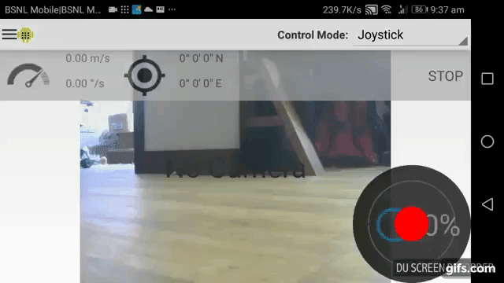
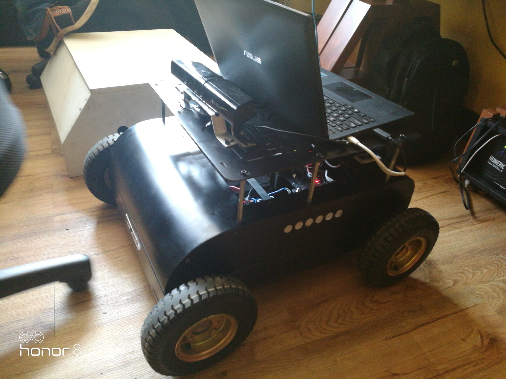
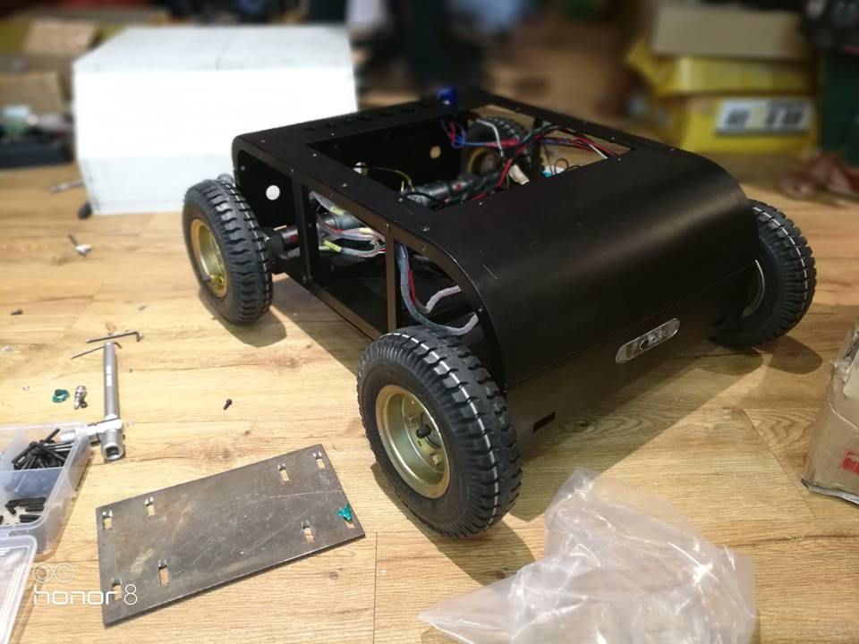
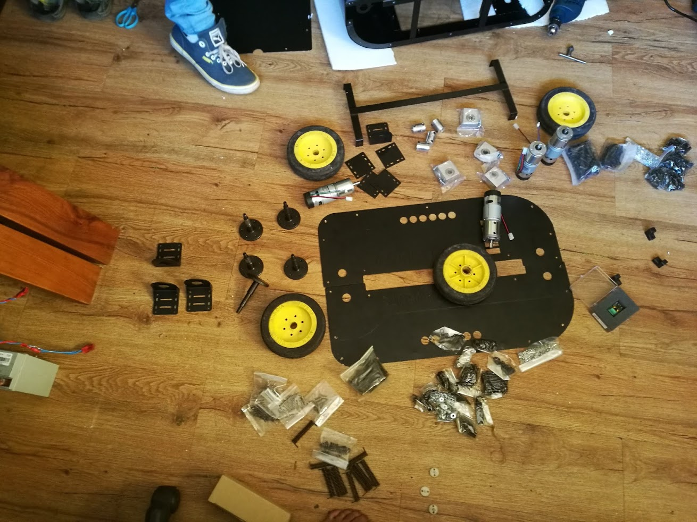
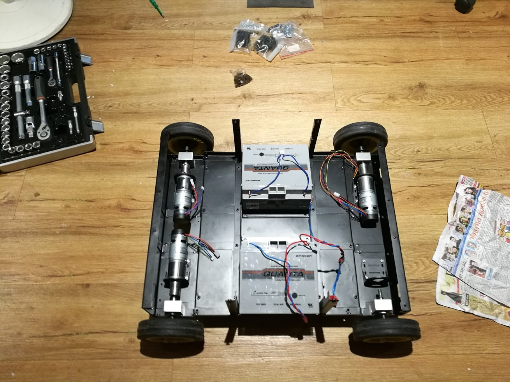
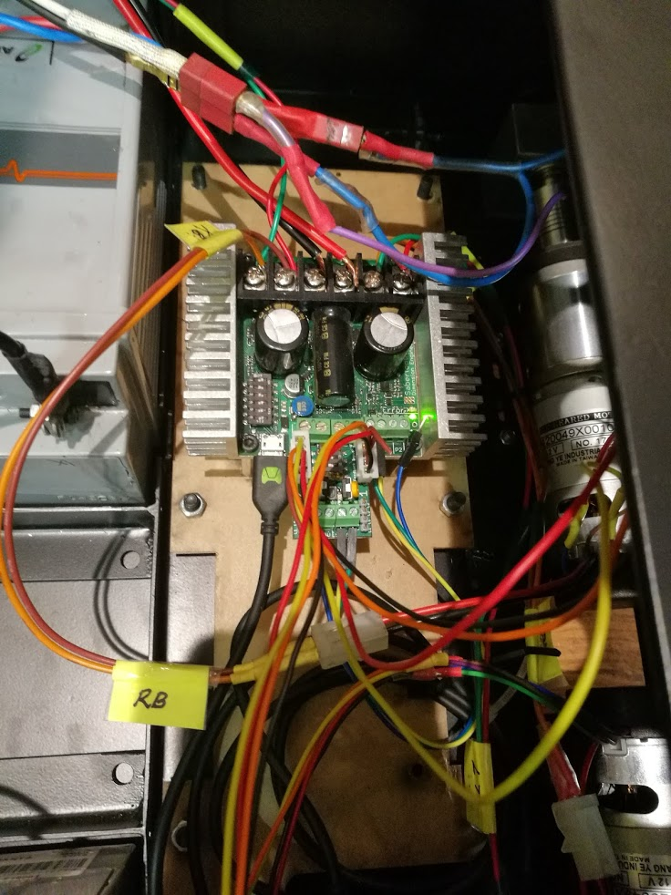
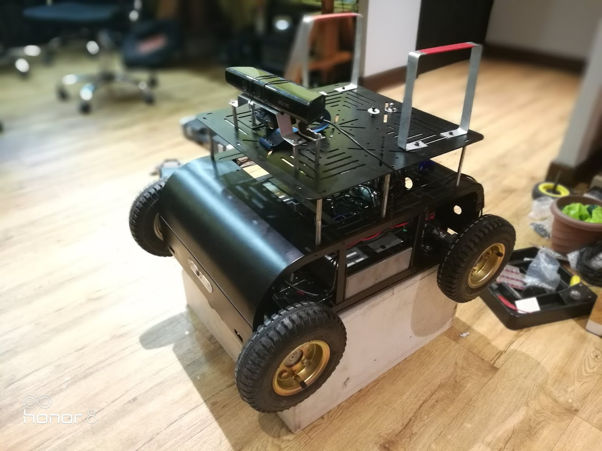

ROS robot
An terrain robotic base which is & ROS enabled and asthetically pleasing . It could take payloads of upto 80kg
Projects Overview
This was robot was build with the aim of converting this into a IP67 All terrain robotic base for aggricultural uses @ Vanora Robots , Manglore . We went from drawing board to full scale working prototye in just a matter of 7 months . The robot was ROS enabled out of the box


Hardware used
- 26Ah 12v Lead Acid Battery , 2 Pieces
- Sabertooth 2 X 32 module Robu Link
- Kangaroo X2 PID Encoder Module Robu Link
- IG42 High torque Geared Motors with encoders , 4 pieces Robu Link
- RPI3 at that time , we also had a Jetson Tx2 module . Actually we switched to a multi Ros architecture where we used RPI3 for the base and Jetson for the
- Kinect Sensor for mapping
- IMU MPU6050

ROS enabled out of the box
I have used gmapping , move_base ,
Get the code i used for the Controlling of the Sabertooth module here.
For mapping i was using the Kinect Sensor and used
kinect_ros_drivers


Gazebo Simulation

